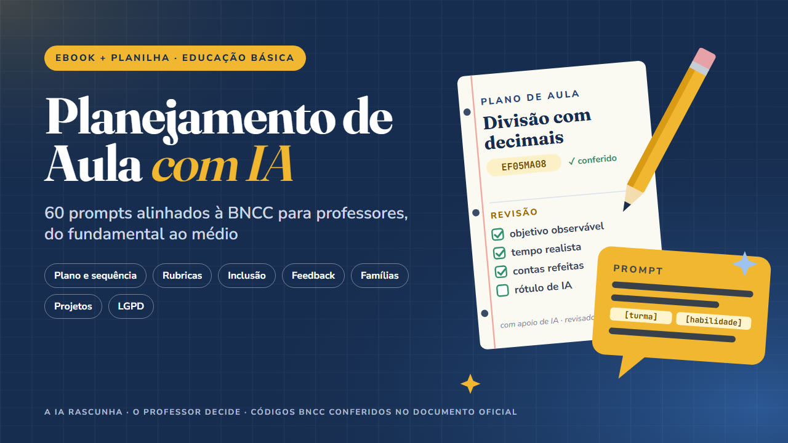

Planejamento de Aula com IA
60 prompts alinhados à BNCC para professores
60 prompts para planejar aulas com IA a partir da BNCC: plano, sequência, rubrica, inclusão, feedback e famílias. Com códigos conferidos, LGPD, checklist e planilha.
Quero o meu por R$ 37Ebook de 52 páginas + planilha + 2 vídeo-aulas · acesso na hora · garantia de 7 dias

Plano de aula em segundos, e depois?
- A ferramenta de IA devolve um plano de aula em segundos. O problema é o que vem junto: código da BNCC que não existe, conta errada no gabarito, cinco atividades para cinquenta minutos e, às vezes, uma "pesquisa" que ninguém fez.
O Planejamento de Aula com IA ensina a usar a IA como assistente de rascunho, com você no comando. São 60 prompts prontos para copiar, cada um partindo do texto oficial da habilidade da BNCC, com um exemplo preenchido e uma lista curta do que conferir antes de levar para a sala.
O que tem dentro
- IA na escola com responsabilidade: privacidade dos estudantes e LGPD, o que nunca colar numa ferramenta de IA, ECA Digital, uso de celular em sala (Lei 15.100/2025), situação das diretrizes nacionais e como rotular material feito com IA.
- Como usar os prompts: as 5 partes de um bom prompt, campos para preencher e conversa em rodadas.
- 60 prompts em 8 tarefas: plano de aula (8), sequência didática (7), avaliação e rubrica (9), adaptação para inclusão (7), atividades diferenciadas (8), feedback e devolutiva (7), comunicação com a família (7) e projetos (7).
- Exemplos por etapa (anos iniciais, anos finais e ensino médio), do pedido à versão revisada.
- Checklist de revisão pedagógica com 23 itens.
- Apêndice com a página do documento oficial da BNCC em que cada um dos 60 códigos foi conferido.
- Planilha (Excel, Google Planilhas e LibreOffice): banco com os 60 prompts e filtros por etapa, componente e tarefa; modelo de semana com células amarelas que mostra o prompt usado, avisa se falta rótulo ou revisão e confere se o código é um dos exemplos verificados; checklist; registro da conferência da BNCC.
- 2 vídeo-aulas de cerca de 2 minutos e meio (narração gerada por IA, rotulada): do prompt ao plano revisado; e a planilha, do banco à semana.
É para você se…
- Professores do 1º ao 9º ano do ensino fundamental e do ensino médio, de qualquer componente.
- Coordenadores pedagógicos que querem orientar a equipe sobre o uso responsável de IA no planejamento.
- Quem já usa ChatGPT, Gemini, Claude ou Copilot e quer resultados mais confiáveis, ou quem quer começar com segurança.
Não é para você se…
- Quem procura planos de aula prontos para aplicar sem ler: aqui você recebe prompts e método de revisão.
- Educação infantil: os exemplos começam no 1º ano do fundamental.
- Quem quer que a IA decida sobre estudantes (notas, laudos, pareceres individuais). O material ensina o contrário.
O que este produto NÃO é: Não promete economia de horas nem resultado de aprendizagem: quanto a IA ajuda depende da tarefa, da ferramenta e da revisão. A IA não substitui o professor. Os códigos da BNCC dos exemplos foram conferidos em 20/10/2026 no documento oficial (basenacionalcomum.mec.gov.br); o currículo da sua rede pode ter desdobramentos próprios, e a política de tecnologia da sua escola prevalece. Sem vínculo com o Ministério da Educação nem com as empresas das ferramentas citadas, marcas de seus donos.
Tudo por um pagamento único
Ebook de 52 páginas + planilha + 2 vídeo-aulas · sem mensalidade
Pix ou cartão · acesso imediato pela área de membros da Kiwify (o link chega no seu e-mail)
100% de volta
Leia por 7 dias. Se não servir, o dinheiro volta inteiro.
Peça o reembolso pela Kiwify ou pelo e-mail lucaszone36@gmail.com, sem precisar explicar. Esse prazo é um direito seu pelo Código de Defesa do Consumidor.
Quero testar sem riscoPerguntas frequentes
Como recebo?
Acesso imediato pela área de membros da Kiwify. O link de acesso chega no e-mail informado na compra.
Consigo ler no celular?
Sim. O PDF abre no celular, no tablet e no computador.
Os códigos da BNCC estão certos?
Os 60 códigos dos exemplos foram conferidos em 20/10/2026 no documento oficial (basenacionalcomum.mec.gov.br), e o apêndice do ebook mostra a página de cada um. O currículo da sua rede pode ter desdobramentos próprios.
Serve para educação infantil?
Não. Os exemplos começam no 1º ano do ensino fundamental e vão até o ensino médio.
Posso colar dados dos alunos na IA?
Não. O ebook traz o que nunca colar numa ferramenta de IA e como trabalhar sem expor estudantes, de acordo com a LGPD.
E se eu me arrepender?
Você tem 7 dias para pedir 100% do valor de volta, sem justificar, pela Kiwify ou pelo e-mail lucaszone36@gmail.com.